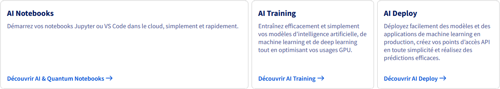

Ovh
Tools versions
| Os / Tool | Version |
|---|---|
| Sles | 15sp6 |
| Ovh | Cloud Public |
Intro Ovh
En tant que leader européen du cloud, nous fournissons des solutions de cloud public et privé, d’hébergement mutualisé et de serveurs dédiés dans 140 pays à travers le globe. Nous proposons également à nos clientes et clients l’enregistrement de noms de domaine, de la téléphonie, ainsi que de l’accès à internet. Créé en 1999, OVHcloud est une entreprise française présente dans le monde entier, grâce à la localisation internationale de ses datacenters et points de présence.
Public Cloud produit
MoSCoW
Produits
| Produits | MoSCoW (D.C) | MoSCoW (A.V.P.G) |
|---|---|---|
| Compute | M | M |
| Storage | M | M |
| Network | M | M |
| Containers & Orchestration | M | M |
| Databases | W | C |
| Analytics | C | S |
| Data Platform | W | W |
| AI & Machine learning | S | M |
| Idam | M | M |
Services
| Produits | Services | Options | MoSCoW (D.C) | MoSCoW (A.V.P.G) |
|---|---|---|---|---|
| Compute | Virtual Machine Instances | General Purpose | M | M |
| Compute Optimized | W | M | ||
| Memory Optimized | W | M | ||
| Storage Optimized | C | M | ||
| Discovery | M | M | ||
| Cloud GPU | C | M | ||
| Metal Instances | W | C | ||
| Instance Backup | C | C | ||
| Private Image catalog | M | M | ||
| Public Image Catalog | S | S | ||
| Storage | Block Storage | Block Storage | M | M |
| Volume snapshot | C | S | ||
| Volume Backup | C | S | ||
| Object Storage | Standard | M | M | |
| Standard 3-AZ | W | C | ||
| High Performance | C | S | ||
| Standard (SWIFT) | W | C | ||
| Cloud Archive | W | C | ||
| Cold Archive | W | W | ||
| Network | Private Network | M | M | |
| Load Balancer | M | M | ||
| Floating IP | M | M | ||
| Gateway | M | M | ||
| Instance Public Traffic | M | M | ||
| Anti-DDoS | M | M | ||
| Containers & Orchestration | Managed Rancher Service | W | C | |
| Managed Kubernetes Service | M | M | ||
| Managed Private Registry | M | M | ||
| Load Balancer for M.K.S | M | M | ||
| Databases | MySQL | Essential Plan | W | W |
| Business Plan | W | W | ||
| Enterprise Plan | W | W | ||
| PostgreSQL | Essential Plan | W | C | |
| Business Plan | W | W | ||
| Enterprise Plan | W | W | ||
| MongoDB | Discovery | W | W | |
| Production | W | W | ||
| Advanced | W | W | ||
| Managed Caching | Essential Plan | W | W | |
| Business Plan | W | W | ||
| Cassandra | Essential Plan | W | W | |
| Business Plan | W | W | ||
| Enterprise Plan | W | W | ||
| M3DB | Essential Plan | W | W | |
| Business Plan | W | W | ||
| Enterprise Plan | W | W | ||
| M3 Aggregator | Essential Plan | W | W | |
| Business Plan | W | W | ||
| Enterprise Plan | W | W | ||
| Analytics | Data Processing | W | W | |
| Kafka | Business | W | W | |
| Kafka | Enterprise | W | W | |
| OpenSearch | Essential | W | W | |
| OpenSearch | Business | W | W | |
| OpenSearch | Enterprise | W | W | |
| Kafka MirrorMaker | Essential | W | W | |
| Kafka MirrorMaker | Business | W | W | |
| Kafka MirrorMaker | Enterprise | W | W | |
| Kafka Connect | Essential | W | W | |
| Kafka Connect | Business | W | W | |
| Kafka Connect | Enterprise | W | W | |
| Managed Dashboards (Grafana) | Essential | C | S | |
| Logs Data Platform | Standard | C | S | |
| Entreprise | W | W | ||
| Data Platform | Lakehouse Manager | W | W | |
| Data Catalog | W | W | ||
| Data Processing Engine | W | W | ||
| Analytics Manager | W | W | ||
| Applications Services | W | W | ||
| Control Center | W | W | ||
| AI & Machine learning | AI Notebooks & Quantum Notebooks | Unités CPU | M | M |
| Unités GPU | M | M | ||
| AI Training | Unités CPU | C | S | |
| Unités GPU | C | S | ||
| AI Deploy | Unités CPU | W | S | |
| Unités GPU | W | S | ||
| Lettria | W | W | ||
| Voxist | W | W | ||
| NVIDIA NGC Platform | C | S | ||
| AI Endpoints (Beta) | W | C | ||
| Idam | IAM | M | M | |
| Logs Data Platform | C | M | ||
| Key Management Service (KMS) | C | S | ||
| Service Logs | C | M |
Public Cloud deep dive
Compute
Description
Le cloud computing est un modèle de fourniture de services informatiques qui permet aux utilisateurs d’accéder à des ressources informatiques (comme des serveurs, du stockage, des bases de données, des applications et des services réseau) via internet. Ces services sont facturés à la demande et à l’usage. Ce modèle informatique offre une flexibilité, une scalabilité et une efficacité considérables en éliminant la nécessité pour les entreprises de gérer leur propre infrastructure physique.
Services
Virtual Machine Instances
Un large choix d’instances adaptées à tous vos usages:
- General Purpose: Ces instances offrent à vos serveurs de développement et vos applications web ou d'entreprise des ressources CPU/RAM équilibrées. Les vCores sont cadencés à 2 GHz et plus.
- Compute Optimized: Ces instances sont idéales pour les applications nécessitant des fréquences de calcul importantes ou de la parallélisation de tâches. Les vCores sont cadencés à 2,3 GHz et plus.
- Memory Optimized: Ces instances sont pensées pour les usages d'analyse des données et la datascience grâce à leurs ratios CPU/RAM optimisés et des IOPS accélérées. Les vCores sont cadencés à 2 GHz et plus.
- Storage Optimized: Profitez d'IOPS ultrarapides grâce à des cartes NVMe spécialement conçues pour les bases de données et les applications big data
- Discovery: Démarrez l’expérience Public Cloud avec des instances dont les ressources sont partagées, qui fourniront des performances stables à un prix très accessible.
Pro
- La base du cloud computing en mode IaaS.
- Peut permettre une approche Lift and Shift.
- Facile d'accès.
Cons
- Il n'y a que l'infra sous jacente qui est managé.
- Il faut faire la M.C.O.
Notes
- Garantie 99.99 % sauf pour Discovery
Cloud GPU
Des serveurs cloud taillés pour le traitement de l'IA, des graphismes et des tâches massivement parallèles.
- Solutions Cloud GPU sur mesure.
- Prix transparents et compétitifs.
- Durabilité et efficacité.
- Sécurité des données et conformité.
Pro
- La base du cloud computing en mode IaaS.
- Accès à un GPU.
Cons
- Il n'y a que l'infra sous jacente qui est managé.
- Il faut faire la M.C.O.
Metal Instances
Combinez les avantages du Bare Metal avec l’automatisation du cloud.
- Les avantages du serveur dédié…
- …combinés avec l’automatisation du cloud.
- Une maîtrise des coûts assurée.
- Sécurité des données et conformité.
Instance Backup
Des sauvegardes système à la demande.
À l’heure des déploiements automatisés et de « l’infrastructure as code », de nombreuses situations peuvent nécessiter une sauvegarde de votre système. Vos instances peuvent être sauvegardées à tout moment. La machine réalisera un export du disque de l’instance. Grâce à cela, vous pouvez donc industrialiser vos déploiements.
Private Image catalog
Vos systèmes d'exploitation rassemblés et disponibles pour vos instances.
En plus du Public Image Catalog fournissant des images système maintenues par OVHcloud, vous pouvez bâtir un Private Image Catalog pour mettre à disposition de vos instances des systèmes d'exploitation spécifiquement paramétrés pour vos usages ou des appliances fournis par un éditeur par exemple.
Pro
- Permettrait de déployer les ova/qcow2 de nos instances.
Cons
- N/A.
Public Image Catalog
Les images système et applications pré-installées les plus populaires.
Afin de démarrer au plus vite votre infrastructure, OVHcloud fournit les images cloud standards du marché, ainsi que les applications pré-installées les plus populaires.
Storage
Description
Le stockage cloud est un service qui permet de sauvegarder des données sur des serveurs distants accessibles via internet. Il offre la possibilité de stocker, gérer et consulter des fichiers et des données depuis n’importe quel appareil connecté à internet, à tout moment. Ce type de stockage est géré par des fournisseurs de services qui maintiennent l’infrastructure et garantissent la sécurité et la disponibilité des données. Le stockage cloud est souvent utilisé pour la sauvegarde de données, le partage de fichiers et la collaboration en ligne. Il représente une alternative flexible et évolutive au stockage traditionnel sur disque dur, sur des dispositifs de stockage locaux ou sur des serveurs dédiés
Notes
- Les options des service block et object storage dépendent de la région.
- Globalement l'object storage est moins chère que le block storage.
Services
Block Storage
Block Storage est une solution de stockage de données par blocs rendue possible grâce à une méthode divisant les contenus en blocs de données de taille fixe. Ces dernières sont stockées sur des disques attachés à vos instances dans des baies de stockage. Vos informations sont réparties sur des disques indépendants de votre machine. Chaque bloc de données est traité comme une unité distincte et reçoit un identifiant unique. Ainsi, vous contrôlez votre capacité de stockage par l’ajout de disques selon vos besoins, tout en maîtrisant la sécurité et les performances de votre infrastructure.
- Sécurisé par la réplication.
- Basé sur Ceph.
- Performance et scalabilité au meilleur coût.
Pro
- Intéréssant pour un accès rapide à la données.
- Backupable et snapshotable.
Cons
- Pas de client S3.
- Pas d'accès direct (A confirmer).
Object Storage
Il s’agit d’une technologie proposant un service de stockage en ligne, accessible via API et permettant de stocker des données sans limite d’espace, le cluster d’Object Storage étant géré par le fournisseur de cloud. Il est possible de pousser tous types de données dans un service de stockage d’objets.
- Coûts de stockage maîtrisés et optimisés.
- Solution réversible et interopérable.
- Résilience et haute disponibilité de vos données.
Pro
- Client S3.
- Accès direct au stockage.
Cons
- Pas de backup si ce n'est la Cloud Archive.
- Moins performant que le block par nature.
Cold Archive
- Stratégies de résilience à long terme.
- Service compatible S3.
- Archivage de données critiques.
Network
Description
Un réseau cloud est une infrastructure virtuelle permettant de connecter appareils, services et applications via internet en utilisant la puissance et la flexibilité des ressources cloud. Il repose sur des centres de données distants pour offrir évolutivité et gestion centralisée des ressources réseau.
Services
Private Network
Une connexion privée et flexible entre vos instances.
- Réseaux étendus entre les localisations.
- Isolation.
- Extension aux autres services d’OVHcloud.
- Certifications ISO/IEC 27001, 27701 et HDS.
Pro
- Obligatoire pour toutes construction d'un vpc (virtual private cloud).
Cons
- N/A.
Load Balancer
L’OVHcloud Load Balancer vous permet d’assurer plus facilement l’évolutivité, la haute disponibilité et la résilience de vos applications. Pour ce faire, la charge de trafic est répartie de manière dynamique entre plusieurs instances et régions. Améliorez l’expérience utilisateur en automatisant la gestion du trafic et de la charge, tout en maîtrisant les coûts. En combinant le Load Balancer et laFloating IP, vous pouvez créer un point d’entrée unique et sécurisé pour votre application, tout en activant des scénarios de basculement et en protégeant vos ressources privées.
- Déployable dans les régions.
- Connecté aux réseaux privés.
- Gestion simplifiée.
- Charges de travail privées.
- Intégration à l’écosystème Public Cloud.
- Plusieurs protocoles de contrôle d'intégrité.
- Chiffrement SSL/TLS.
- Compatible avec les instances Public Cloud.
Pro
- Permet d'avoir un LB dans le vpc.
- Permet des déploiements blue green sur du legacy.
- Fait office de terminaison SSL.
Cons
- A voir si obligatoire avec une gateway pour une mono-instance.
Floating IP
Une Floating IP est une adresse IP publique et statique qui peut être réaffectée dynamiquement à plusieurs appareils sur votre réseau, ce qui facilite la haute disponibilité, la tolérance aux pannes et le basculement pour vos applications et services dans le cloud. Ce type d’IP peut être assigné à une instance comme un Load Balancer, puis rapidement réassigné. Vous pouvez également anticiper et gérer les allocations d’IP publiques grâce à l’automatisation via API.
- Haute disponibilité.
- Migration des environnements.
- Point d’accès principal.
Pro
- Obligatoire pour exposer un service.
Cons
- N/A.
Gateway
Le service Gateway est le moyen le plus simple d’assurer une connexion sécurisée et évolutive entre une infrastructure vRack et un réseau connecté à internet. Il permet un accès internet sécurisé à toutes vos instances, sans nécessiter d'adresse IP publique séparée. Plusieurs offres sont disponibles, chacune disposant de capacités de bande passante différentes pour répondre à vos besoins spécifiques.
- Exposition flexible des services grâce aux Floating IP.
- Combiner un Load Balancer et des Floating IP.
- Trafic sortant vers internet.
Pro
- Obligatoire pour exposer un service combinant LB & Floating IP.
- Obligatoire pour avoir un traffic sorant vers internet.
Cons
- N/A.
Instance Public Traffic
Le trafic réseau public sortant des instances est inclus dans le prix des instances sur toutes les localisations, excepté la région Asie-Pacifique (Singapour, Sydney et Mumbai). Sur ces trois régions, 1 To/mois de trafic public sortant est inclus pour chaque projet Public Cloud. Au-delà de ce quota, chaque Go de trafic supplémentaire est facturé. Le trafic réseau entrant depuis le réseau public est inclus dans tous les cas et dans toutes les régions.
Anti-DDoS
Profitez d'une protection permanente sur l'ensemble de vos ressources cloud, pour garantir un niveau de service optimal.
Containers & Orchestration
Description
L'orchestration de conteneurs est un processus automatisé qui permet de gérer le déploiement, la mise à l'échelle et l'administration de conteneurs applicatifs sur des environnements de serveurs multiples. Cette technique facilite le déploiement d'applications complexes réparties sur plusieurs conteneurs, assure leur fonctionnement optimal, et gère les aspects tels que la mise à jour sans interruption de service, la répartition de la charge et la résilience face aux pannes.
Services
Managed Rancher Service
Unifiez l’administration de vos clusters Kubernetes grâce à un outil managé de gestion centralisée.
- Versatilité.
- Sécurité.
- Scalabilité.
- Support.
Pro
- La gestion du rancher est managé.
- Maitrise du déploiement des clusters k8s.
- Possibilité de déployer en mode multi cloud et/ou on premise.
Cons
- Cas d'usage particulié ou à raffiner.
- Il faut avoir les compétences.
- Il faut faire la M.C.O.
Notes
- Managed Rancher Service permet de faciliter la gestion de plusieurs clusters Kubernetes, dont ceux créés avec Managed Kubernetes Service.
- Managed Kubernetes Service est un service managé pour gérer vos applications conteneurisées au sein d’un même cluster Kubernetes.
- Ces deux services sont complémentaires, mais l’un ne nécessite pas obligatoirement l’utilisation de l’autre. Vous pouvez gérer manuellement vos clusters Kubernetes créés avec Managed Kubernetes Service sans utiliser Managed Rancher Service. À l’inverse, vous pouvez utiliser Managed Rancher Service pour gérer des clusters Kubernetes autres que ceux créés avec Managed Kubernetes Service, par exemple, des clusters Kubernetes sur des serveurs Bare Metal OVHcloud ou bien chez d’autres fournisseurs de cloud (sur site ou non).
- Vous pouvez gérer n’importe quel cluster Kubernetes (chez OVHcloud, d’autres fournisseurs de cloud ou sur site) via Managed Rancher Service.
Managed Kubernetes Service
Libérez-vous de l’installation et de la maintenance de vos clusters Kubernetes et déployez rapidement vos applications grâce à la solution d’orchestration de conteneurs de référence.
- Gestion intégrale par OVHcloud.
- Interopérabilité.
- Écosystème de services.
- Évolutivité et résilience.
Pro
- La gestion du cluster est managé.
Cons
- Limité à ce que supporte le cloud opérateur (CSI/CNI/Version de k8s).
Managed Private Registry
Stockez, gérez et accédez facilement à vos images de conteneurs et Helm charts grâce à ce service entièrement géré.
- Interopérabilité complète.
- Sécurité maximale.
- Tarifs prévisibles.
- Conformité en matière d'hébergement de données de santé.
Pro
- Nous avons besoin d'un registry privé accessible depuis le cloud afin de déployer nos applications.
Cons
- N/A.
Notes
- L'hébergement d'un registre privé de conteneurs nécessite un environnement sécurisé pour le stockage de vos images de conteneurs. Pour ce faire, vous pouvez soit utiliser un service d'un fournisseur de cloud, installer des logiciels tiers sur votre propre infrastructure ou créer votre propre solution personnalisée.
- Utiliser le service d'un fournisseur de cloud, tel que Managed Private Registry d'OVHcloud, constitue la solution la plus simple pour héberger un registre privé de conteneurs. Ce service entièrement géré vous libère du stress lié à la maintenance de votre registre privé, tout en offrant une sécurité élevée, des tarifs prévisibles et une gamme de fonctionnalités.
Load Balancer for M.K.S
Gérez les variations d’activité en répartissant le trafic sur vos différentes ressources.
Équilibrez la charge de votre application en temps réel sur plusieurs nœuds de manière automatique et sécurisée.
- 99,99 % de disponibilité.
- Gestion automatique des nœuds.
- Intégré directement à Kubernetes.
- Conforme et certifié.
Pro
- Service managé compatible nativement avec l'offre ovh.
- Seul moyen pour avoir un LB sur du multinode.
- Compatible avec les ingress nginx.
Cons
- Compétence nécéssaire à l'opérationnalisation.
Databases
Description
Une base de données cloud est souvent appelée « Database as a Service » ou « Cloud database Service ». Elle est conçue et accessible via une plateforme cloud. Le cloud permet aux entreprises d'héberger des bases de données sans acheter de matériel dédié. Les bases de données cloud prennent en charge à la fois les bases de données relationnelles (MySQL , PostgreSQL) et NoSQL (MongoDB, Caching, Apache Cassandra).
Services
MySQL
Bénéficiez d’un service 100 % managé pour déployer et opérer les bases de données MySQL de vos sites e-commerce et de vos applications. Nous nous chargeons de la gestion de votre service.
PostgreSQL
Déployez un cluster managé PostgreSQL en quelques clics. Bénéficiez du moteur de bases de données relationnelles open-source de référence pour vos données et vos applications.
MongoDB
Accélérez votre time to market en nous confiant l’administration de vos bases de données NoSQL. Laissez vos équipes se concentrer sur leur cœur de métier et le développement de vos services. Nous nous occupons de la configuration, de la maintenance, de la sauvegarde, de la sécurité et du monitoring de votre moteur de base de données NoSQL orienté documents préféré.
Managed Caching
Votre service « in-memory database » NoSQL compatible Redis® OSS et managée par OVHcloud. Améliorez la vitesse d'exécution de vos applications grâce à une solution de caching haut performance.
Cassandra
Déployez et exécutez un cluster distribué Apache Cassandra en quelques clics, managé par nos équipes. Très performant et hautement disponibilité, ce service NoSQL est spécialement adapté pour vos traitements massifs de requêtes en écriture.
M3DB
Déployez un moteur de base de données time series (TSBD) open source, distribué et performant. Un service 100% managé idéal pour collecter vos métriques à petite ou grande échelle en un instant.
M3 Aggregator
Déployez une architecture M3 Aggregator dédiée à l'agrégation de flux pour vos bases de données M3DB. Intégrez vos flux directement à vos workflows de métriques, en fonction de critères prédéfinis.
Analytics
Description
Le cloud analytics désigne l’utilisation de services d’analyse de données hébergés sur des plateformes cloud. Cette approche permet de traiter et d’analyser de grandes quantités de données en utilisant des ressources informatiques cloud fournies et gérées par des tiers. Elle offre évolutivité, efficacité et réduction des coûts liés à l’infrastructure informatique.
Services
Data Processing
Analysez vos données rapidement et en toute simplicité sur Apache Spark. OVHcloud se charge de déployer en quelques minutes un cluster Apache Spark dédié pour traiter votre requête.
- Parallélisation des traitements.
- Vous codez, nous déployons.
- Réduction des coûts.
- Sécurité et conformité.
Kafka
Déployez en quelques clics un cluster Apache Kafka complet et managé par nos équipes, tout en conservant le contrôle de vos données.
OpenSearch
Le moteur NoSQL d’indexation, de recherche de contenu et d’analyse de données entièrement managé par nos soins. Simplifiez le quotidien de vos développeurs en leur permettant de se concentrer sur la création d’applications.
Kafka MirrorMaker
Copiez et streamez facilement les données entre deux clusters Apache Kafka. Service 100% managé pour maintenir une replication complète dans un datacenter distant et une haute disponibilité de vos clusters Kafka.
Kafka Connect
Kafka Connect permet de connecter des systèmes externes à un cluster Apache Kafka. Plus besoin de vous préoccuper de la gestion matérielle du service : configuration, monitoring et mises à jour.
Managed Dashboards (Grafana)
Créez des tableaux de bord et des graphiques dynamiques depuis différentes sources avec la plateforme Grafana®.
- Open-source et managé.
- Rapport performances/prix.
- Sécurité et conformité.
- Plus de 60 services Public Cloud.
Pro
- La gestion du dashboard est managé.
Cons
- Pricing élevé pour le service rendu.
- A étudier face aux grafana(s) fournient par les autres services.
Logs Data Platform
Augmentez la visibilité des environnements de vos applications en collectant, traitant, analysant et stockant vos logs sur une plateforme à la fois complète et managée. L'analyse de logs est essentielle pour maintenir votre infrastructure et vos applications en bon état de fonctionnement.
- Standard et réversible.
- Performante et évolutive.
- Tarification complète.
- Sécurité et conformité.
Pro
- Une plateforme complète entierement managé.
- Plateforme offerte en "standard".
Cons
- Pricing flous ...
- Beaucoup d'options flous ...
Data Platform
Description
Une plateforme collaborative unifiée pour intégrer, stocker massivement, préparer et exploiter vos données, afin d'accélérer vos projets Data & Analytics.
Services
Lakehouse Manager
Un service serverless de data lake et data warehouse sur OVHcloud Data Platform, utilisant Apache Iceberg pour le stockage massif de données.
Data Catalog
Référentiel central pour la gestion de toutes les sources de données de OVHcloud Data Platform : connectez-les, analysez-les et ajoutez des règles de planification pour définir des normes de formatage.
Data Processing Engine
Service d'intégration et de transformation des données de OVHcloud Data Platform, pour automatiser l’exécution et l’orchestration de vos workflows ETL/ELT en production.
Analytics Manager
Service de visualisation de données et de gestion des requêtes de OVHcloud Data Platform. Faites vos analyses en libre-service, réalisez vos tableaux de bord, et facilitez les prises de décisions en vous appuyant sur vos données.
Applications Services
Service de conception et déploiement d’API et de web apps personnalisées. Développez vos API et partagez des tableaux de bord détaillés avec OVHcloud Data Platform.
Control Center
Gérez les droits d'accès et accédez en temps réel aux informations de votre infrastructure. Obtenez une vue d’ensemble complète de vos pipelines de données, applications et connecteurs afin de collecter des métriques, surveiller les performances et configurer des alertes.
AI & Machine learning

Description
Le Machine learning as a Service (ou MLaaS) est un service cloud récent qui propose du machine learning. Il bénéficie de l’essor du cloud ces dernières années, à l’instar des SaaS, PaaS et IaaS. Grâce à lui, les entreprises peuvent se lancer dans l’intelligence artificielle (IA) à moindres frais, grâce aux différents outils de machine learning et solutions de développement. Vous gagnez ainsi du temps lors du lancement de votre activité. De plus, la maîtrise de votre budget rend possible le développement de tous les usages pour lesquels le logiciel de machine learning est conçu : estimation des risques, détection des fraudes, stratégies marketing, optimisation logistique, etc.
Services
AI Notebooks & Quantum Notebooks
Accélérez le lancement de vos projets et modèles avec des notebooks entièrement gérés en quelques secondes. Accédez à Jupyter ou Visual Studio Code et démarrez rapidement avec les ressources adéquates.
- Pour les développeurs et les data scientists.
- Tarification claire et flexible.
- Vos frameworks AI préférés.
- Un cloud européen pour le respect de vos données.

Pro
- Environnements managés.
- Frameworks pré-configurés.
- Notebooks collaboratif.
Cons
- Pricing élevé pour le service rendu.
- A étudier face aux grafana(s) fournient par les autres services.
AI Training
Entraînez efficacement et simplement vos modèles d’intelligence artificielle, de machine learning et de deep learning tout en optimisant vos usages GPU.
- Pour les équipes de développement et les data scientists.
- Optimisation de l’usage des ressources.
- Puissance GPU au meilleur prix.
- Certifications et conformité.
Pro
- Orchestrateur managé.
Cons
- Learning curve.
AI Deploy
Déployez facilement des modèles et des applications de machine learning en production, créez vos points d’accès API en toute simplicité et réalisez des prédictions efficaces.
- Flexibilité, performance et haute disponibilité.
- Déploiement rapide et architecture managée.
- Sécurité et conformité.
Pro
- Fournit des service SaaS afin de faire tourner des algo headless ou des mini-apps.
Cons
- Ce n'est pas adpaté au contexte d'imaging fabric.
Lettria
- N/A.
Voxist
- N/A.
NVIDIA NGC Platform
OVHcloud et NVIDIA s’associent pour proposer la meilleure plateforme d’accélération GPU pour le deep learning et le calcul haute performance.
Le NVIDIA GPU Cloud d’OVHcloud combine la flexibilité du Public Cloud et la puissance de la carte graphique NVIDIA Tesla V100, pour fournir un catalogue complet de conteneurs à accélération GPU, pouvant être déployés et maintenus dans le cadre d’applications d’intelligence artificielle.
Il permet aux utilisateurs d’exécuter leurs projets sur une plateforme fiable et performante qui respecte confidentialité, réversibilité et transparence de la localisation des données.
AI Endpoints (Beta)
Designed with simplicity in mind, our platform allows developers of all skill levels to enhance their applications with cutting-edge AI APIs —no AI expertise required.
Idam
Description
Identité, sécurité et opérations est une gamme de services d'OVHcloud. Ils visent à améliorer la sécurité, la gestion et l'efficacité opérationnelle de votre solution. Ces services comprennent la gestion des identités et des accès (IAM) pour le contrôle d'accès à vos données, le service de gestion de clés (KMS) pour gérer les clés de chiffrement et les journaux de service pour la surveillance des performances et de la sécurité.
Services
Gestion des identités et des accès (IAM)
Gérez de manière sécurisée l’identité de vos utilisateurs et applications, ainsi que leurs droits via une interface unique pour tous vos services.
La solution IAM d’OVHcloud assure une gestion granulaire des accès à vos produits OVHcloud et renforce la sécurité de votre gestion des accès en s’appuyant sur une interface centralisée.
- Identité fédérée.
- Unifié et harmonisé sur l’ensemble du portefeuille OVHcloud y compris pour les logiciels tiers.
- Gestion fine des stratégies.
- Une plus grande sécurité pour vos services.
- Inclus sans frais supplémentaires.
Les politiques contiennent une liste d'identités (comptes, utilisateurs, groupes d'utilisateurs) concernées par les politiques, une liste de ressources auxquelles les politiques doivent s'appliquer et une liste d'actions autorisées sur ces ressources.
Pro
- Oligatoire pour créer des identités, des actions et des policies.
Cons
- Compétence nécéssaire à l'opérationnalisation.
Logs Data Platform
Augmentez la visibilité des environnements de vos applications en collectant, traitant, analysant et stockant vos logs sur une plateforme à la fois complète et managée. L'analyse de logs est essentielle pour maintenir votre infrastructure et vos applications en bon état de fonctionnement.
- Standard et réversible.
- Performante et évolutive.
- Tarification complète.
- Sécurité et conformité.
Pro
- Solution clefs en main.
- C'est un service cross service.
- Obligatoire pour des besoins d'audit et de surveillance des accès.
Cons
- Tarification incompréhensible.
Key Management Service (KMS)
Améliorez votre sécurité et gérez efficacement vos clés de chiffrement avec le service de gestion de clés (KMS) d'OVHcloud.
Conçu pour une intégration transparente, notre KMS vous permet de gérer de manière centralisée les clés de chiffrement de toutes vos applications, qu'elles soient hébergées dans le cloud ou on-premises. Cela maximise la sécurisation des données et rationalise les opérations de sécurité.
- Protection instantanée des données grâce au chiffrement en un clic.
- Sécurité renforcée avec gestion complète des accès aux clés.
- Vos clés : renforcez la confidentialité des données avec Bring Your Own Keys (BYOK).
- Modèle de tarification prévisible : requêtes incluses sans frais supplémentaires.
- Certification Nutanix Ready.
- SDK et CLI open source.
Service Logs (Beta)
OVHcloud Service logs vous aide à suivre « qui a fait quoi, où et quand » sur l’ensemble de vos ressources OVHcloud. Combinée à Logs Data Platform, cette solution vous permet de transformer vos logs en données précieuses à l'aide d'outils de stockage, d'archivage, d'interrogation et de visualisation. Vous pouvez désormais surveiller vos données et votre système en temps réel, pour une meilleure sécurité et une efficacité opérationnelle accrue.
- Efficacité opérationnelle accrue.
- Sécurité renforcée.
- Conformité sans effort.
- Intégration fluide et non intrusive avec le catalogue de services OVHcloud.
- Gestion unifiée des logs.
- Solution open source évolutive et entièrement managée.
Local Zones
Développez votre activité et celle de votre clientèle à l’échelle mondiale tout en opérant localement. Stimulez la croissance de votre entreprise en optimisant votre accès aux données, en améliorant les performances des applications et en tirant parti de la faible latence, du stockage optimal, de l’edge computing, etc.
- Faible latence et proximité.
- Localisation des données.
- Couverture internationale.
- De hautes performances au meilleur prix.
- Flexibilité et évolutivité du cloud.
- Standard et facile d'utilisation.
Saving Plan
- Optimisez vos coûts avec les Savings Plans.
- Évoluez à votre rythme.
- Gagnez en prévisibilité.
- Économisez sur vos workloads stables.
- Pilotez la croissance de votre application.
- Gérez la saisonnalité de votre infrastructure.
Misc
Quels sont les avantages du cloud computing ?
Les avantages du cloud computing sont nombreux : il permet une grande flexibilité et une scalabilité des ressources informatiques, réduit les coûts en faisant payer uniquement pour ce qui est utilisé, facilite l’accès aux services et applications de n’importe où et minimise la maintenance nécessaire, car l’infrastructure est gérée par le fournisseur.
Quels sont les principaux types de cloud computing ?
Il existe plusieurs types de cloud computing :
Infrastructure-as-a-service (IaaS) : fournit des ressources informatiques virtualisées via internet. Les utilisateurs gèrent les systèmes d’exploitation, les applications et la configuration, tandis que le fournisseur gère le matériel sous-jacent.
Platform-as-a-service (PaaS) : met à la disposition des utilisateurs un environnement de développement et de déploiement sur internet, ce qui leur permet de développer, exécuter et gérer des applications sans se soucier de la complexité de l’infrastructure.
Software-as-a-service (SaaS) : fournit des applications logicielles via internet sur un modèle d’abonnement. Les utilisateurs accèdent aux logiciels sans avoir à les installer sur leur ordinateur personnel ou sur les serveurs de l’entreprise.
Object storage vs. block storage: How are they different?
Qu’est-ce qu’un registre privé de conteneurs ?
Un registre privé de conteneurs est un système de stockage et de distribution pour les images de conteneurs, c'est-à-dire des fichiers qui incluent tout le code, les bibliothèques et les autres ressources nécessaires pour exécuter une application dans un environnement conteneurisé. Accessible uniquement aux utilisateurs autorisés, un registre de conteneurs privé constitue un espace sécurisé pour stocker les images de conteneurs. Il permet aux organisations de gérer et de contrôler facilement leurs images de conteneurs, tout en offrant une intégration simple avec les workflows existants d'intégration continue et de déploiement continu (CI/CD) pour un développement, des tests et un déploiement d'applications fluides.
Qu’est-ce que le data processing ?
Le data processing, ou traitement des données, désigne le processus d’analyse des données brutes. En effet, ces vastes quantités d’informations s’avèrent capitales pour les entreprises. Une fois traitées, elles permettent une meilleure compréhension des chiffres de ventes, de l’efficacité d’une campagne marketing ou encore d’un risque financier. Cette opération s’articule en plusieurs étapes :
- La collecte des données. La quantité d’informations recueillies influence la qualité du résultat. Elles peuvent provenir de différentes sources : fichiers client, inventaires, études antérieures, etc. Pour être utilisables, elles doivent être fiables
- La préparation des informations. Il s’agit d’une phase de « nettoyage » de vos bases de données. Elle vise à éliminer les éléments de mauvaise qualité et/ou les erreurs.
- L’importation des données travaillées et le démarrage du traitement. L’automatisation de cette analyse passe par un algorithme de machine learning.
- L’interprétation des données. Cette étape vous permet de dégager des informations lisibles et exploitables par tous.
- Le stockage des données. Il sert à conserver des données qui pourront servir lors de futures études.
Notez que le stockage d’informations est soumis à certaines réglementations. Par exemple, le RGPD exige une solution sécurisée et conforme pour l’ensemble de vos données.
Links
Ovhcloud
Ovhcloud Blog
Ovhcloud Learn
OVHcloud Public Cloud Doc
OVHcloud Public Cloud Status
OVHcloud Market Place Santé